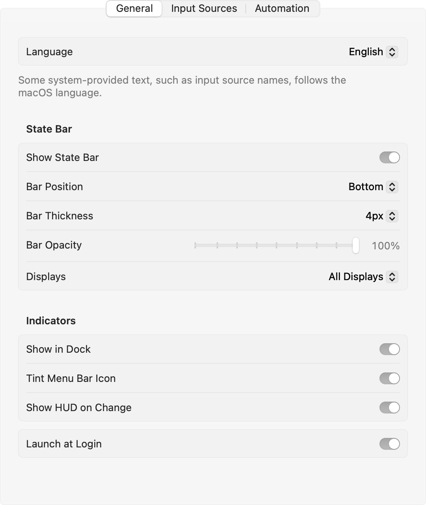
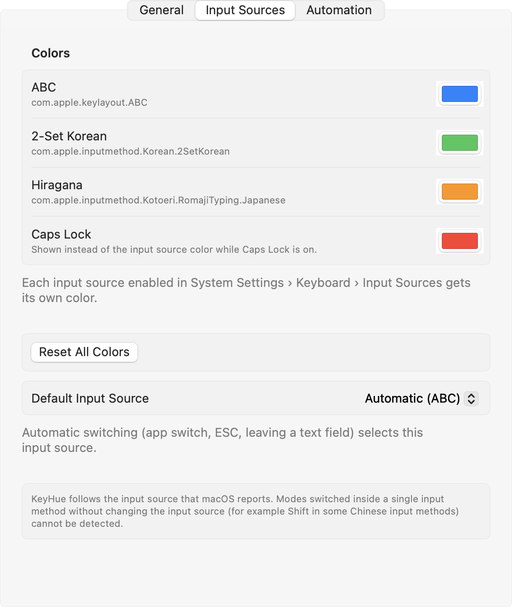
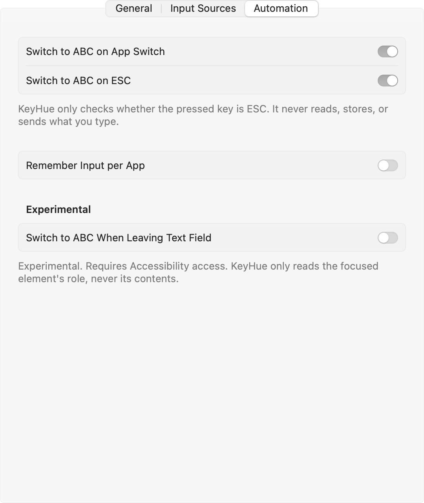

KeyHue manual
KeyHue shows the input source your Mac is using as a thin colored line at the edge of the screen, so you can tell Korean from English (or Japanese, Russian, …) before you start typing.
Install
- Download
Get KeyHue.zip (always the latest version) and unzip it.
- Move it to Applications
Drag KeyHue.app into your Applications folder. KeyHue runs on macOS 13 Ventura or later, on Apple silicon and Intel.
- Allow it to open
KeyHue isn't signed with an Apple Developer ID, so macOS blocks the first launch.
- macOS 15 Sequoia or later: open KeyHue once. When macOS says it can't be opened, click Done. Then go to System Settings › Privacy & Security, scroll down and click Open Anyway.
- macOS 13–14: Control-click (or right-click) KeyHue.app, choose Open, then click Open in the dialog.
- Or run this in Terminal:
xattr -dr com.apple.quarantine /Applications/KeyHue.app
You only need to do this once per version.
First launch
KeyHue appears in two places: an icon in the Dock, and a chameleon in the menu bar near the clock. The chameleon takes the color of the current input source. Click the Dock icon (or open KeyHue again) to show the settings window. If you'd rather keep KeyHue only in the menu bar, turn off Show in Dock.
A thin line appears along the bottom of every display. Switch input sources the way you usually do (Caps Lock, Control-Space or the 한/A key) and watch the line change color.
If you pressed the switch key and the color didn't change, the switch didn't happen. That's the point: KeyHue only shows what macOS actually selected.
Reading the colors
Every input source enabled in System Settings › Keyboard › Input Sources gets its own color. Until you choose your own, KeyHue uses these:
- Blue: ABC, U.S., German, Dvorak and other Latin layouts
- Green: Korean
- Orange: Japanese
- Purple: Chinese
- Teal: Russian and other Cyrillic layouts
- Red: Caps Lock is on. This wins over every input source color.
Other languages get their own color automatically, and it stays the same every time. Red is kept for Caps Lock.
The menu
Click the chameleon to open the menu. Items with a ✓ are turned on.
| Item | What it does |
|---|---|
| Current Input | The input source KeyHue sees right now, with its color. |
| Show State Bar | Shows or hides the colored line. |
| Switch to ABC on App Switch | Switches to your default input source whenever you change apps. |
| Switch to ABC on ESC | Switches to your default input source when you press ESC. Needs Input Monitoring. |
| Default Input Source | Where the automatic switches go. Automatic picks ABC, then U.S., then another Latin layout. |
| Bar Position, Thickness, Opacity | Put the line at the bottom, top, left or right, make it 1–16 px thick, and make it more transparent. |
| Colors | Pick a color for each input source and for Caps Lock. Tint Menu Bar Icon turns the colored chameleon on or off. |
| Displays | Show the line on all displays, or only on the one you're working on. |
| Show HUD on Change | Briefly shows 가, あ, 中, Я or a in the middle of the screen when the input source changes. |
| Remember Input per App | Brings back the input source you last used in each app. |
| Switch to ABC When Leaving Text Field | Experimental. Needs Accessibility. |
| Settings… (⌘,) | Opens the settings window with every option. |
| Launch at Login | Starts KeyHue when you log in. |
| Show in Dock | Shows or hides KeyHue's Dock icon. Off keeps it only in the menu bar. |
The ABC in some item names changes to whatever you set as your default input source.
Settings
Choose Settings… in the menu, or press ⌘, while the menu is open.
General

- Language changes KeyHue's own language right away, without restarting. System Default follows macOS. Input source names still come from macOS in its language.
- Show in Dock: turn off to keep KeyHue only in the menu bar. You can still open settings from the chameleon.
- Bar Position: bottom is the default. Top is easier to notice but covers the edge of the menu bar.
- Bar Thickness and Bar Opacity work well together, for example a thick line at 60% opacity.
Input Sources

- Click a color well to pick any color. Reset appears next to colors you changed.
- Default Input Source is where automatic switching goes. Set it to German, for example, if that's the layout you type commands in.
- Add or remove input sources in System Settings. The list here updates on its own.
Automation

Switching back automatically
These options put you back on your default input source, so shortcuts and commands don't come out in the wrong language.
When you switch apps
No permission needed. If Remember Input per App is also on, apps you've used before get their last input source back instead.
When you press ESC
Handy in Vim, VS Code and terminals. The first time you turn it on, KeyHue explains why it needs Input Monitoring and opens the system prompt.
- Go to System Settings › Privacy & Security › Input Monitoring.
- Turn on KeyHue.
- If the option still shows a dash (–) in the menu, quit and reopen KeyHue.
When you leave a text field (experimental)
Needs Accessibility (System Settings › Privacy & Security › Accessibility). It works in most native Mac apps. In Chrome and some Electron apps it may not.
Update and uninstall
To update, quit KeyHue from its menu, download the latest version, and replace KeyHue.app in Applications. Your settings stay. If you use the ESC or text field options, you may need to allow the permission again after updating.
To uninstall, quit KeyHue, turn off Launch at Login, and move KeyHue.app to the Trash. To also remove its settings, run defaults delete io.github.sejoung.keyhue in Terminal and remove KeyHue from Input Monitoring and Accessibility in System Settings.
Troubleshooting
I can't see the chameleon in the menu bar
On MacBooks with a notch, menu bar icons can hide behind it when there are many. Quit a few menu bar apps, or hold ⌘ and drag icons to rearrange them. On macOS 26 or later, also check System Settings › Menu Bar.
The color doesn't change when I switch
KeyHue follows the input source macOS reports. Some input methods switch modes inside themselves without changing the input source (for example Shift in some Chinese input methods), and KeyHue can't see those.
"Switch on ESC" shows a dash (–)
Input Monitoring isn't allowed yet. Choose Grant Input Monitoring Access… under it in the menu, allow KeyHue, then reopen KeyHue.
macOS says KeyHue is damaged or can't be checked
That's the first-launch block for apps without an Apple Developer ID. Follow step 3 in Install.
Privacy
KeyHue never records what you type. It reads the selected input source, Caps Lock state and the active app. With the optional features on, it also checks whether a key is ESC, and what kind of element is in focus. It never reads the text. KeyHue has no network code and no analytics, and the source code is open under the MIT License.